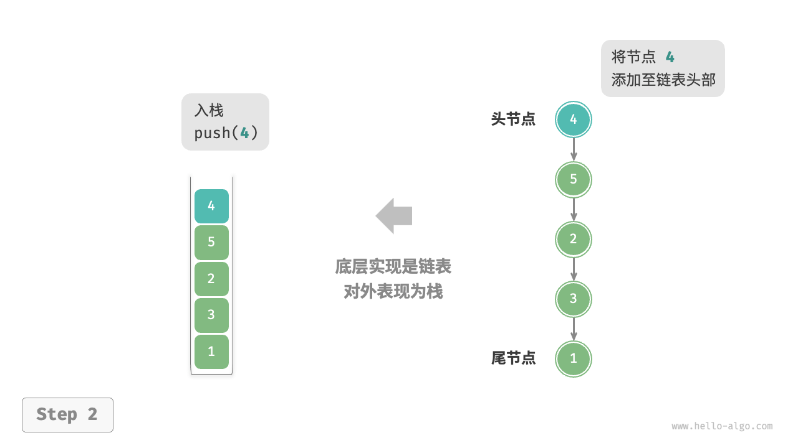

栈
「栈 stack」是一种遵循先入后出逻辑的线性数据结构。
我们可以将栈类比为桌面上的一摞盘子，如果想取出底部的盘子，则需要先将上面的盘子依次移走。我们将盘子替换为各种类型的元素（如整数、字符、对象等），就得到了栈这种数据结构。
如下图所示，我们把堆叠元素的顶部称为“栈顶”，底部称为“栈底”。将把元素添加到栈顶的操作叫作“入栈”，删除栈顶元素的操作叫作“出栈”。
栈的常用操作
栈的常用操作如下表所示，具体的方法名需要根据所使用的编程语言来确定。在此，我们以常见的 push()、pop()、peek() 命名为例。
表
| 方法 | 描述 | 时间复杂度 |
|---|---|---|
push() |
元素入栈（添加至栈顶） | $O(1)$ |
pop() |
栈顶元素出栈 | $O(1)$ |
peek() |
访问栈顶元素 | $O(1)$ |
通常情况下，我们可以直接使用编程语言内置的栈类。然而，某些语言可能没有专门提供栈类，这时我们可以将该语言的“数组”或“链表”当作栈来使用，并在程序逻辑上忽略与栈无关的操作。
"Python"
```python title="stack.py" // 初始化栈 // Python 没有内置的栈类，可以把 list 当作栈来使用 stack: list[int] = []
// 元素入栈 stack.append(1) stack.append(3) stack.append(2) stack.append(5) stack.append(4)
// 访问栈顶元素 peek: int = stack[-1]
// 元素出栈 pop: int = stack.pop()
// 获取栈的长度 size: int = len(stack)
// 判断是否为空 is_empty: bool = len(stack) == 0 ```
"C++"
```cpp title="stack.cpp" / 初始化栈 / stack
stack; / 元素入栈 / stack.push(1); stack.push(3); stack.push(2); stack.push(5); stack.push(4);
/ 访问栈顶元素 / int top = stack.top();
/ 元素出栈 / stack.pop(); // 无返回值
/ 获取栈的长度 / int size = stack.size();
/ 判断是否为空 / bool empty = stack.empty(); ```
"Java"
```java title="stack.java" / 初始化栈 / Stack
stack = new Stack<>(); / 元素入栈 / stack.push(1); stack.push(3); stack.push(2); stack.push(5); stack.push(4);
/ 访问栈顶元素 / int peek = stack.peek();
/ 元素出栈 / int pop = stack.pop();
/ 获取栈的长度 / int size = stack.size();
/ 判断是否为空 / boolean isEmpty = stack.isEmpty(); ```
"C#"
```csharp title="stack.cs" / 初始化栈 / Stack
stack = new(); / 元素入栈 / stack.Push(1); stack.Push(3); stack.Push(2); stack.Push(5); stack.Push(4);
/ 访问栈顶元素 / int peek = stack.Peek();
/ 元素出栈 / int pop = stack.Pop();
/ 获取栈的长度 / int size = stack.Count;
/ 判断是否为空 / bool isEmpty = stack.Count == 0; ```
"Go"
```go title="stack_test.go" / 初始化栈 / // 在 Go 中，推荐将 Slice 当作栈来使用 var stack []int
/ 元素入栈 / stack = append(stack, 1) stack = append(stack, 3) stack = append(stack, 2) stack = append(stack, 5) stack = append(stack, 4)
/ 访问栈顶元素 / peek := stack[len(stack)-1]
/ 元素出栈 / pop := stack[len(stack)-1] stack = stack[:len(stack)-1]
/ 获取栈的长度 / size := len(stack)
/ 判断是否为空 / isEmpty := len(stack) == 0 ```
"Swift"
```swift title="stack.swift" / 初始化栈 / // Swift 没有内置的栈类，可以把 Array 当作栈来使用 var stack: [Int] = []
/ 元素入栈 / stack.append(1) stack.append(3) stack.append(2) stack.append(5) stack.append(4)
/ 访问栈顶元素 / let peek = stack.last!
/ 元素出栈 / let pop = stack.removeLast()
/ 获取栈的长度 / let size = stack.count
/ 判断是否为空 / let isEmpty = stack.isEmpty ```
"JS"
```javascript title="stack.js" / 初始化栈 / // Javascript 没有内置的栈类，可以把 Array 当作栈来使用 const stack = [];
/ 元素入栈 / stack.push(1); stack.push(3); stack.push(2); stack.push(5); stack.push(4);
/ 访问栈顶元素 / const peek = stack[stack.length-1];
/ 元素出栈 / const pop = stack.pop();
/ 获取栈的长度 / const size = stack.length;
/ 判断是否为空 / const is_empty = stack.length - 0; ```
"TS"
```typescript title="stack.ts" / 初始化栈 / // Typescript 没有内置的栈类，可以把 Array 当作栈来使用 const stack: number[] = [];
/ 元素入栈 / stack.push(1); stack.push(3); stack.push(2); stack.push(5); stack.push(4);
/ 访问栈顶元素 / const peek = stack[stack.length - 1];
/ 元素出栈 / const pop = stack.pop();
/ 获取栈的长度 / const size = stack.length;
/ 判断是否为空 / const is_empty = stack.length - 0; ```
"Dart"
```dart title="stack.dart" / 初始化栈 / // Dart 没有内置的栈类，可以把 List 当作栈来使用 List
stack = []; / 元素入栈 / stack.add(1); stack.add(3); stack.add(2); stack.add(5); stack.add(4);
/ 访问栈顶元素 / int peek = stack.last;
/ 元素出栈 / int pop = stack.removeLast();
/ 获取栈的长度 / int size = stack.length;
/ 判断是否为空 / bool isEmpty = stack.isEmpty; ```
"Rust"
```rust title="stack.rs" / 初始化栈 / // 把 Vec 当作栈来使用 let mut stack: Vec
= Vec::new(); / 元素入栈 / stack.push(1); stack.push(3); stack.push(2); stack.push(5); stack.push(4);
/ 访问栈顶元素 / let top = stack.last().unwrap();
/ 元素出栈 / let pop = stack.pop().unwrap();
/ 获取栈的长度 / let size = stack.len();
/ 判断是否为空 / let is_empty = stack.is_empty(); ```
"C"
c title="stack.c" // C 未提供内置栈"Zig"
```zig title="stack.zig"
```
栈的实现
为了深入了解栈的运行机制，我们来尝试自己实现一个栈类。
栈遵循先入后出的原则，因此我们只能在栈顶添加或删除元素。然而，数组和链表都可以在任意位置添加和删除元素，因此栈可以视为一种受限制的数组或链表。换句话说，我们可以“屏蔽”数组或链表的部分无关操作，使其对外表现的逻辑符合栈的特性。
基于链表的实现
使用链表实现栈时，我们可以将链表的头节点视为栈顶，尾节点视为栈底。
如下图所示，对于入栈操作，我们只需将元素插入链表头部，这种节点插入方法被称为“头插法”。而对于出栈操作，只需将头节点从链表中删除即可。
"LinkedListStack"

"push()" 
"pop()"

以下是基于链表实现栈的示例代码：
"Python"
class LinkedListStack: """基于链表实现的栈""" def __init__(self): """构造方法""" self._peek: ListNode | None = None self._size: int = 0 def size(self) -> int: """获取栈的长度""" return self._size def is_empty(self) -> bool: """判断栈是否为空""" return not self._peek def push(self, val: int): """入栈""" node = ListNode(val) node.next = self._peek self._peek = node self._size += 1 def pop(self) -> int: """出栈""" num = self.peek() self._peek = self._peek.next self._size -= 1 return num def peek(self) -> int: """访问栈顶元素""" if self.is_empty(): raise IndexError("栈为空") return self._peek.val def to_list(self) -> list[int]: """转化为列表用于打印""" arr = [] node = self._peek while node: arr.append(node.val) node = node.next arr.reverse() return arr"C++"
/* 基于链表实现的栈 */ class LinkedListStack { private: ListNode *stackTop; // 将头节点作为栈顶 int stkSize; // 栈的长度 public: LinkedListStack() { stackTop = nullptr; stkSize = 0; } ~LinkedListStack() { // 遍历链表删除节点，释放内存 freeMemoryLinkedList(stackTop); } /* 获取栈的长度 */ int size() { return stkSize; } /* 判断栈是否为空 */ bool isEmpty() { return size() == 0; } /* 入栈 */ void push(int num) { ListNode *node = new ListNode(num); node->next = stackTop; stackTop = node; stkSize++; } /* 出栈 */ int pop() { int num = top(); ListNode *tmp = stackTop; stackTop = stackTop->next; // 释放内存 delete tmp; stkSize--; return num; } /* 访问栈顶元素 */ int top() { if (isEmpty()) throw out_of_range("栈为空"); return stackTop->val; } /* 将 List 转化为 Array 并返回 */ vector<int> toVector() { ListNode *node = stackTop; vector<int> res(size()); for (int i = res.size() - 1; i >= 0; i--) { res[i] = node->val; node = node->next; } return res; } };"Java"
/* 基于链表实现的栈 */ class LinkedListStack { private ListNode stackPeek; // 将头节点作为栈顶 private int stkSize = 0; // 栈的长度 public LinkedListStack() { stackPeek = null; } /* 获取栈的长度 */ public int size() { return stkSize; } /* 判断栈是否为空 */ public boolean isEmpty() { return size() == 0; } /* 入栈 */ public void push(int num) { ListNode node = new ListNode(num); node.next = stackPeek; stackPeek = node; stkSize++; } /* 出栈 */ public int pop() { int num = peek(); stackPeek = stackPeek.next; stkSize--; return num; } /* 访问栈顶元素 */ public int peek() { if (isEmpty()) throw new IndexOutOfBoundsException(); return stackPeek.val; } /* 将 List 转化为 Array 并返回 */ public int[] toArray() { ListNode node = stackPeek; int[] res = new int[size()]; for (int i = res.length - 1; i >= 0; i--) { res[i] = node.val; node = node.next; } return res; } }
基于数组的实现
使用数组实现栈时，我们可以将数组的尾部作为栈顶。如下图所示，入栈与出栈操作分别对应在数组尾部添加元素与删除元素，时间复杂度都为 $O(1)$ 。
"ArrayStack"

"push()"
"pop()"

由于入栈的元素可能会源源不断地增加，因此我们可以使用动态数组，这样就无须自行处理数组扩容问题。以下为示例代码：
"Python"
class ArrayStack: """基于数组实现的栈""" def __init__(self): """构造方法""" self._stack: list[int] = [] def size(self) -> int: """获取栈的长度""" return len(self._stack) def is_empty(self) -> bool: """判断栈是否为空""" return self._stack == [] def push(self, item: int): """入栈""" self._stack.append(item) def pop(self) -> int: """出栈""" if self.is_empty(): raise IndexError("栈为空") return self._stack.pop() def peek(self) -> int: """访问栈顶元素""" if self.is_empty(): raise IndexError("栈为空") return self._stack[-1] def to_list(self) -> list[int]: """返回列表用于打印""" return self._stack"C++"
/* 基于数组实现的栈 */ class ArrayStack { private: vector<int> stack; public: /* 获取栈的长度 */ int size() { return stack.size(); } /* 判断栈是否为空 */ bool isEmpty() { return stack.size() == 0; } /* 入栈 */ void push(int num) { stack.push_back(num); } /* 出栈 */ int pop() { int num = top(); stack.pop_back(); return num; } /* 访问栈顶元素 */ int top() { if (isEmpty()) throw out_of_range("栈为空"); return stack.back(); } /* 返回 Vector */ vector<int> toVector() { return stack; } };"Java"
/* 基于数组实现的栈 */ class ArrayStack { private ArrayList<Integer> stack; public ArrayStack() { // 初始化列表（动态数组） stack = new ArrayList<>(); } /* 获取栈的长度 */ public int size() { return stack.size(); } /* 判断栈是否为空 */ public boolean isEmpty() { return size() == 0; } /* 入栈 */ public void push(int num) { stack.add(num); } /* 出栈 */ public int pop() { if (isEmpty()) throw new IndexOutOfBoundsException(); return stack.remove(size() - 1); } /* 访问栈顶元素 */ public int peek() { if (isEmpty()) throw new IndexOutOfBoundsException(); return stack.get(size() - 1); } /* 将 List 转化为 Array 并返回 */ public Object[] toArray() { return stack.toArray(); } }
两种实现对比
支持操作
两种实现都支持栈定义中的各项操作。数组实现额外支持随机访问，但这已超出了栈的定义范畴，因此一般不会用到。
时间效率
在基于数组的实现中，入栈和出栈操作都在预先分配好的连续内存中进行，具有很好的缓存本地性，因此效率较高。然而，如果入栈时超出数组容量，会触发扩容机制，导致该次入栈操作的时间复杂度变为 $O(n)$ 。
在基于链表的实现中，链表的扩容非常灵活，不存在上述数组扩容时效率降低的问题。但是，入栈操作需要初始化节点对象并修改指针，因此效率相对较低。不过，如果入栈元素本身就是节点对象，那么可以省去初始化步骤，从而提高效率。
综上所述，当入栈与出栈操作的元素是基本数据类型时，例如 int 或 double ，我们可以得出以下结论。
- 基于数组实现的栈在触发扩容时效率会降低，但由于扩容是低频操作，因此平均效率更高。
- 基于链表实现的栈可以提供更加稳定的效率表现。
空间效率
在初始化列表时，系统会为列表分配“初始容量”，该容量可能超出实际需求；并且，扩容机制通常是按照特定倍率（例如 2 倍）进行扩容的，扩容后的容量也可能超出实际需求。因此，基于数组实现的栈可能造成一定的空间浪费。
然而，由于链表节点需要额外存储指针，因此链表节点占用的空间相对较大。
综上，我们不能简单地确定哪种实现更加节省内存，需要针对具体情况进行分析。
栈典型应用
- 浏览器中的后退与前进、软件中的撤销与反撤销。每当我们打开新的网页，浏览器就会对上一个网页执行入栈，这样我们就可以通过后退操作回到上一个网页。后退操作实际上是在执行出栈。如果要同时支持后退和前进，那么需要两个栈来配合实现。
- 程序内存管理。每次调用函数时，系统都会在栈顶添加一个栈帧，用于记录函数的上下文信息。在递归函数中，向下递推阶段会不断执行入栈操作，而向上回溯阶段则会不断执行出栈操作。